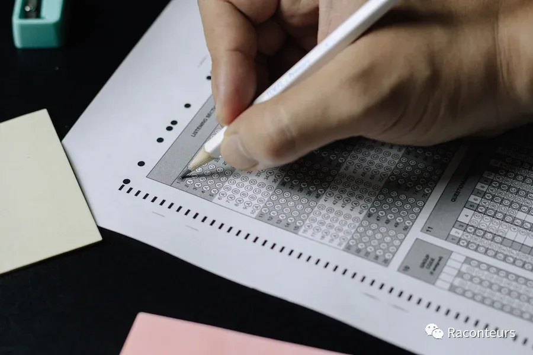
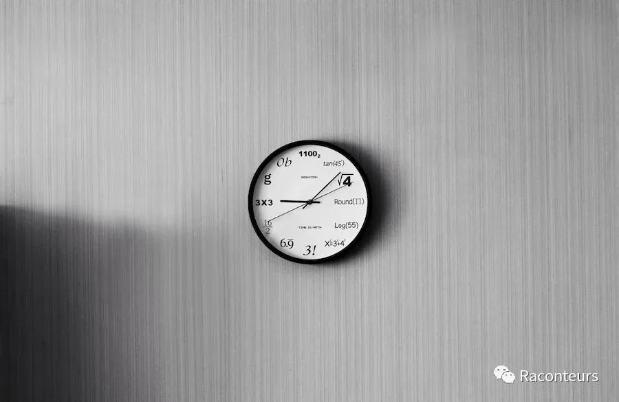
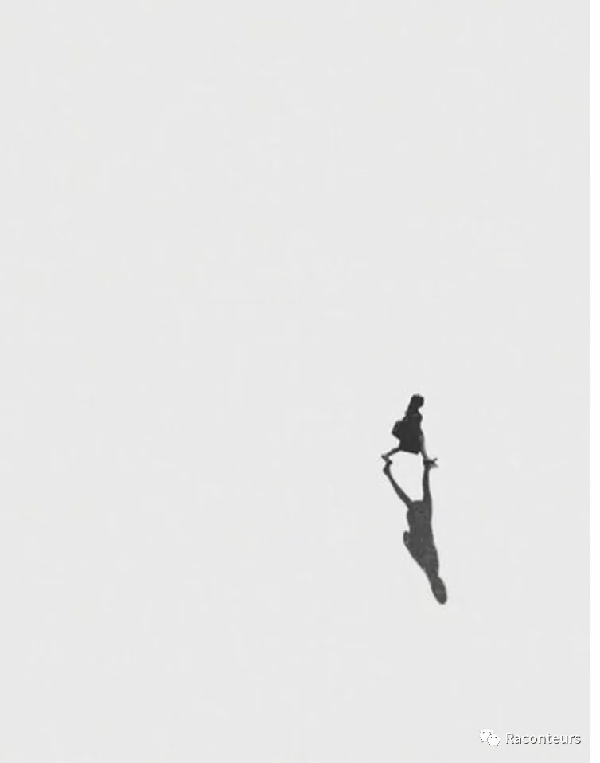
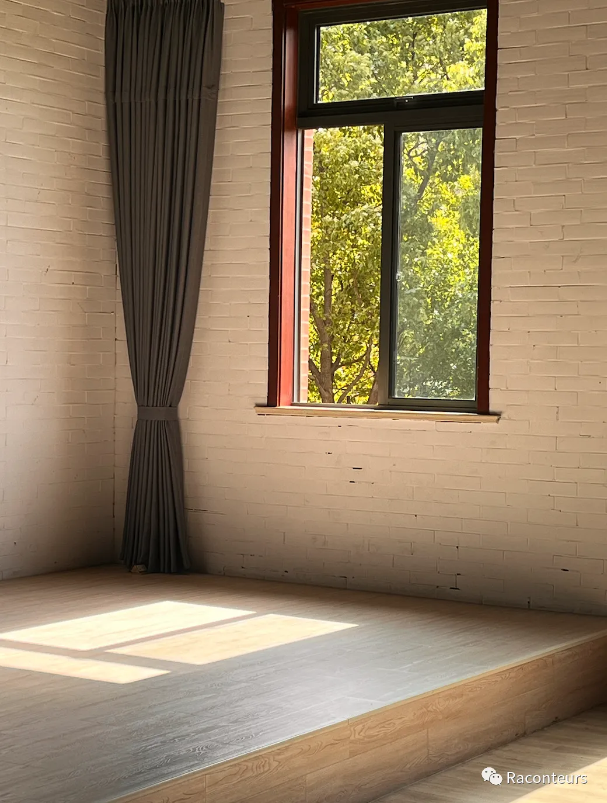

Science teacher, a quintessential Chinese veteran teacher. Middle-aged, wearing a pair of narrow black-framed glasses, thick-lipped, and expressionless, he sports a neat crew cut, holding books in his left hand and tea in his right.
Upon his arrival, he always wore a stern face. During the midday break, he would sit at his desk by the classroom door, where students lined up to be addressed by him. With a glance out the window, he would flip through the homework in his hand, nonchalantly yet accurately pointing out every omission. Perhaps it was because his words were too harsh, students would leave with smiles, but enter the classroom in tears.
Perhaps it was his sternness that led to students secretly pointing and mockingly calling him "Fish Head." At first, I paid no attention, as I was not a top student in science, especially facing such a rigid and serious teacher, I always tried to keep a respectful distance.
As the middle school exams approached, with the pressure that my efforts must be verified, I felt fear for the first time. I would often lean against my desk, spreading out and closing thick science textbooks, the black ink from my pen crossing my wrist and staining the pages. The complex biological brain structures and dense selection options, my eyes blurred, my head swollen, I could only continue to the next question by the marks under the light. Occasionally flipping through the later pages, they were still thick. Countless times, I fantasized about closing my eyes and letting go, but looking up, I continued to hover around the midnight hour.
As the exams drew near, I worked frantically, rejecting all social distractions. Seeing my dark circles deepen, I looked in the mirror below the teaching building and saw a pair of dull, lifeless eyes. Those almond-shaped eyes were still calm, but the loss of focus was so alarming that even I was scared. But I was still not good enough, just like a girl in the corner working hard silently but remaining ordinary.
Every day seemed both groggy and full of effort.
That afternoon, as usual, I took the thick science guide to Teacher Lin's office during the break. He was drinking tea and looked at me helplessly, as if wanting to see through my poor attempt to act serious, without speaking. After a long while, he sighed and said, "Why are you so tired every day? It doesn't seem to work. I've told you many times, your direction is wrong, it's hard no matter which path you take." There was a moment, perhaps pinching the pain, my pen fell, and when I picked it up and bent over, I realized I was already in tears. I didn't speak, just the embarrassed look of sobbing had made my failure even more obvious. Later, I left without a word, only feeling dizzy and faint.
The mock exams never sympathized with the countless nights I had endured because they knew that every student at the window was the same, burning the midnight oil with a thousand lights on, and the real victories were reserved for the warriors who crawled out of the pain of the night. What awaited me was an effort without reward, and for the first time, I had the thought of giving up. What supported me to move forward seemed to be only a blank confusion and future.
I was like a drowning person, desperately seeking a straw but to no avail. A week after the mock exam, for the first time, I mustered all my courage and stood in front of his office with the science guide again. He didn't speak, his eyes fixed on the computer screen, still drinking tea.
"Teacher, I have a question about this problem..." "Don't ask me questions first, I suspect you of copying answers." It was like a thunderbolt. All my strength and beliefs seemed to be vulnerable in an instant. "I didn't!" I almost shouted, "You go back first." The teacher was very calm, still typing in front of the computer, noticing that all the eyes in the office seemed to be burning me up and down. The second time, I walked out of the office in a daze.
During the noon break, the teacher still sat there drinking tea, waiting for us to ask questions. He was always so calm. I tried to put away the grievances and put them back in place.
"Do you know how to draw a wire? How can you be so casual? The wire should be drawn on the wire head, not copied, it's an attitude problem."
"I won't copy, I haven't before, and I won't in the future! If I really wanted to copy, there would be no point in doing this homework." My rationality was shattered again, for the first time, I threw down the red pen and ran straight to the other end of the corridor.
After turning the corner, I stood there alone, looking at the surrounding teaching building, people next to me were rushing with textbooks, people across were chatting with teachers in the corridor, the sun was everywhere, shining on the full branches, shining into every inch of the floor tiles of the teaching building.
I was wearing a mask, tears and snot were stuffy in the mask sobbing. That afternoon I didn't take a nap, I slipped out alone, wandering in the campus, aimlessly wandering, and came back to be recorded.
Ten days before the middle school exam, after school. He still sat in the same position, holding a glass of tea, which was a bright white tea, waiting for the students to ask questions with a calm face. "Teacher, I still can't distinguish the relationship between charge and electron, is it only the metal that can be called with electrons?" I always ask some strange questions, even I can't distinguish the logic of the question, that evening, I have a deep impression, I sat at the desk to answer questions, the teacher sat on the right, waiting for me to ask a question, he said "The more questions, the better, the more problems you can solve."
He always told me, "You have a vague concept, don't brush questions, child, turn the pages of the book, read it, reading is the most important, you always stick to your learning method, and you always suffer losses."
"Anyway, it's the last ten days, I think it's better not to change than to change." Although I said this, I still took a red pen to draw the circuit diagram notes, I was afraid of forgetting again.
"Even if it's the last morning, I still say this." Teacher Lin sighed. He often drank tea, watching the students come and go in a hurry, holding the textbooks to answer questions, always accompanying them as a ferryman waiting to be needed, perhaps thinking of many small individuals who were so desperate to pursue their dreams when they were young, or perhaps thinking of their young selves, I can't say clearly.
I remember there were three days left before the middle school exam, that afternoon there was no class, the whole afternoon was the question and answer time. That day, Teacher Lin sat in the corner of the corridor entrance, the desk on the far left by the window, the students were busy sorting out their textbooks, but they never stopped at the entrance of the corridor. I sat by the window, occasionally looked up and saw the teacher at the entrance of the corridor, sitting in the original corner, watching the people come and go, waiting for students to ask questions. That shadow has been reflected in the window like this, the sunlight happened to meet again, until the afterglow of the sunset swept through the dark shadow, for some reason, there was a kind of touch in my heart.
The last time I saw Teacher Lin was the moment I came out of the science exam, I didn't speak, just stood on the playground full of students, those who used to sit in front of the desk holding a red pen to correct the circuit diagram when flipping the pages, those who were exhausted and looked up to see the blue sky while running, I thought of that day standing in the afternoon sun, looking at the sleeping building of the teaching building, there was a moment of trance, frame by frame, all the stories brushed in my mind, a bit like eternity, and a bit like a blink of an eye.
"All are 150." The teacher was wearing a red volunteer vest, he was smiling, as if he hadn't seen him smile for a long time, his thick eyebrows were wrinkled together, his eyes also showed a thick corner, perhaps also happy for us to finally have the opportunity to realize the dream. I strode forward and hugged him without hesitation, out of the most sincere gratitude.
I know, a long time ago, we have reconciled.